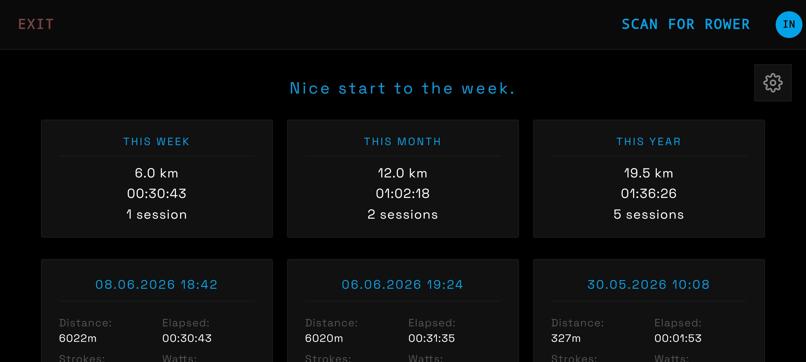
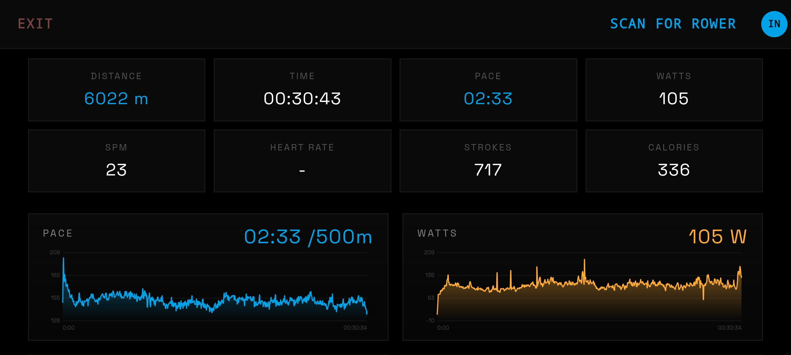
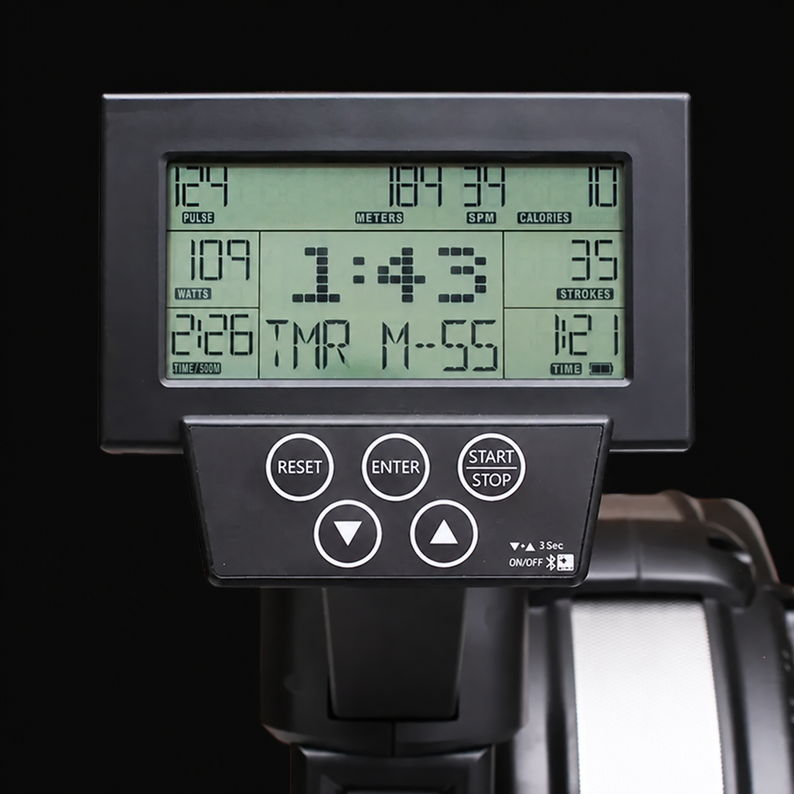

For the Xebex Smart Console 2.0
Xebex called it smart.
XEsync makes it useful.
Live metrics while you row. Saved sessions when you stop.
A history of the effort you put in.
Free · Android · Built by a rower · iPhone?
Check your setup
01 During your workout
See your effort live.
Follow your pace, power, stroke rate and distance on your phone. Heart rate appears when it is supplied by the console.
Give every stroke a scene.
Your pace and stroke rate drive a rower on the water. A moving view of the work you are doing.
Keep the session.
XEsync saves your workout when it ends. Offline sessions stay on your device until they can sync.
02 After your workout
Finish rowing.
Keep the progress.
Revisit your sessions, see your weekly and monthly totals, and look beyond the final number. Open a workout to see how your pace and power changed along the way.


Review your history in the app or sign in on the web. You can also download your account data from the web interface.
03 Check your setup
Your rower.
Your Android phone.

XEsync is built for Xebex Air rowers with the Smart Console 2.0 and its Bluetooth rowing data connection.
Have a different console? Compatibility with other Xebex consoles and rowing machines is not confirmed.
Ask about your setup04 Get rowing
Install XEsync.
Get the free Android app from Google Play.
Set up your account.
Create an account, confirm your email and sign in to keep your workout history.
Connect and row.
Turn on your console and Bluetooth, allow the app’s Bluetooth permissions and scan for your rower.
05 Built by a rower
I wanted more from my console.
So I built it.
XEsync is an independent project. I put my own time and money into making my Xebex more useful, and I’m sharing the app for free with other rowers.
Curious about the Bluetooth connection, the animated water or how your sessions get saved? Explore the engineering
Make your next session count.
Your Smart Console 2.0 has the data. Put it to use.
Get XEsync free for Android